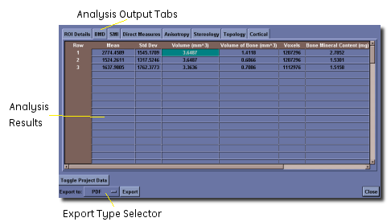
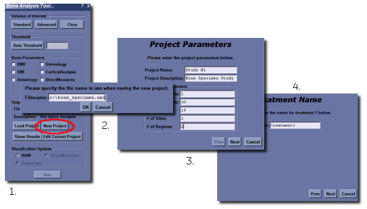
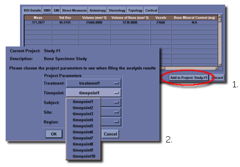
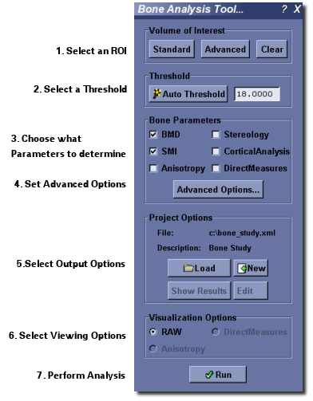

Report Generation
Overview
Analysis results generated by the Advanced Bone Application may be managed using MicroView's report generation tool. The report generator saves all analysis information into an xml-based database, and allows for the retrieval, display and production of a final analysis report.
Basic Output Tool and Output Formats
Each of the different analysis tools in the Advanced Bone Application produces output data. The output data consists of information about each selected ROI's parameters used to generate the output, as well as the final output measurement data. Data is maintained in a user-selected xml-based database. A simple spreadsheet-like tool can be used to review the results of the database, but further analysis is typically done once a report is generated from the results in the database. Four report output formats are available: raw text, CSV text file, Excel spreadsheet file, and PDF file.
Using the Spreadsheet Tool
The spreadsheet tool provides a simple view of the output data generated
by the Advanced Bone Application. At the top of the view are tabs with
labels corresponding to the different analysis tools in the Advanced
Bone Application. The ROI Details tab provides general information
about the region of interest used to generate the analysis. The other
tabs provide the individual measurement data for each tool in a simple
spreadsheet view. If there is no analysis data for a particular tool,
the spreadsheet view for that tool is empty.

Three of the spreadsheet data tables have an additional dropdown control on them. These tables are for the Direct Measures, Stereology and Cortical tools. In each of these tables, there is additional data that is not shown in the default table view (Basic), but can be seen by selecting a different menu entry.
For the Direct Measures tools, the additional information that can be displayed is a histogram (bin counts) of the thickness and spacing data. For the Stereology, the additional information is the morphological data by axis. For the Cortical tool, the additional information is both the slice-by-slice detailed data, and the detailed thickness data.
At the bottom of the spreadsheet, there are a number of buttons and other controls, depending on the nature of the data being viewed. The first controls provide different options for exporting the data to a permanent file. The drop down provides a means to select the different export types - raw text, CSV text, Excel and PDF. After pressing the Export button, the user is prompted to enter a file name and the data will be saved in that file.
If the user wants to keep the data as part of a project, they may click on the Add to Project: project name button if they have an existing project. If there is no project loaded, this button will not appear. See below for details about project management.
If the analysis data will be kept as part of a project, the user is prompted to identify the project parameters that apply to this analysis. Once this is done, the user is presented with the spreadsheet view containing all of the data in the project. The data in this view can again be exported to any of the four file formats, but in this case, will include all of the different analyses that were performed as part of the project.
When viewing the entire project, a new button will appear (Toggle Project Data). In the default view, each entry in the project is simply assigned a line number. However, internally, the program remembers the project parameters that are associated with each entry. By pressing the Toggle Project Data button, the view changes so that the project parameters are explicitly shown in the spreadsheet table, or removes them from view if they are present.
The Discard button will throw away the current results and they are lost forever. If you want to export the results to another file, or keep them in a project, do not use Discard.
The Close button will close the spreadsheet view when looking at the data for the entire project. The data will be saved to the XML file, and can be viewed again using the Show Results button from the Advanced Bone Application window.
Projects
The output data generated by MicroView can be kept as part of a project. The project as implemented in MicroView has five axes. These are the treatment, timepoint, subject, site and region.
To define a project, click on the New Project button.
- Enter a project file name. The project file is stored in an XML file format.
- The project wizard will appear.
- Define the initial project parameters including the name, a description and the number of points on each study axis
- Enter the names for each axis point in the remaining windows of the wizard.

If there is an existing project in memory, the New Project button will unload that project, and allow the user to define a new project for immediate use.
It is possible to open an existing project using the Load Project button. Provided the project file has the correct format, it will be loaded, including all of the existing data in the file, and the project definition.
If you then click on the Edit Current Project button, the project wizard will appear and will already contain all of the parameters for the loaded project.
If you had opened an existing project, the Show Results button will show the data contained in the entire project using the spreadsheet viewer.
Once a project has been defined, when the user clicks on Add to Project: project name, a dialog will be displayed to allow the user to select the different project parameters to use when filing the output data. The window contains five drop down boxes in the dialog corresponding to the five study axes. By selecting the arrow at the right of the drop down, a list of all of the different point labels on that axes is presented and the user can select the appropriate values for the analysis being added to the project.

Understanding the Output Files
The different file types contain the data organized in different ways, and in some cases, may not contain all of the data that is available for analysis.
Text and CSV
The text and CSV files are organized in the same fashion, and simply use a different delimiter between the different data fields. In the case of the text file, it is tab delimited, while the CSV is clearly comma delimited.
All of the data fields are exported to the file. The file organizes the data output according to the tabs that appear in the spreadsheet viewer, so the ROI Details appear first, followed by BMD and so on. In the cases where there is additional data (Direct Measures, etc), the additional data begins on a new line within the section that it relates to. Each data section begins with a title, and a header row (including units) followed by the data row.
If the data exported is the entire project, then each section contains all of the data for the entire project and the lines begin with the project parameters for the specific line. Please note that respective lines may not match up from data section to data section, depending on whether a particular analysis was performed for a given project entry.
Excel
The Excel file is organized in a fashion that is nearly identical to the spreadsheet viewer in MicroView. Each tab in the spreadsheet view is given a separate worksheet in the Excel file. Further, the additional data components (Direct Measures, etc) are given their own worksheet. The rows are alternately highlighted to allow for easier separation of the data. The header rows are fixed so that they do not disappear when scrolling the data.
In the ROI Details worksheet, there is an additional column that contains a snapshot of the region of interest used to generate the data.
All of the points made in the Text and CSV section above regarding the organization of the rows for exporting data from the entire project also apply in this case for each worksheet.
The PDF file does not contain all of the available data, but presents a one or two page summary view of the data and is not meant for use for data analysis. The top of the page contains a large view of the snapshot of the region of interest that generated the data. After the snapshot is a table that contains selected data points from each of the different analyses that can be performed on the image data.
When exporting the data for an entire project to PDF, each different project entry will generate a separate report, contained in the same file. The data is thus separated, and cannot be compared easily.
Fat Analysis Application
Overview
MicroView's Fat Analysis Application performs a simple volumetric analysis of the total volume and fat contained within a specified region of interest. The tool is able to simultaneously analyze multiple ROI's. It is possible to export the results to any or all of the following formats: plain text, CSV, Excel, or PDF.
Using the Fat Analysis Application

- Activate the Fat Analysis Application by selecting
Analyze→Fat Analysis...from MicroView's menu, or by clicking on the Fat Analysis button in the Applications group of MicroView's toolbar. - The Fat Analysis Application can analyze one or more ROIs simultaneously. These ROIs can be generated using any ROI tool available in MicroView. To keep more than one ROI in memory at any given time, use the ROI Manager to manage and store these objects.
- The Auto Outline tool can be used to automatically find an ROI that defines the entire body of the animal within the image. For the best results, this tool assumes that there is no bed visible in the image, that the body of the animal does not touch the edges of the image, and that the image has a dark background with a bright animal. The result is automatically added to the list in the ROI Manager, and is set as the selected ROI for the first region to analyze in the Fat Analysis Application.
- To add or delete ROIs for analysis, use the Add or Delete buttons as appropriate. As at least one ROI must be analyzed, it is not possible to delete the first region to analyze.
- Rename the regions to be analyzed as appropriate. These names will be used in the output generated by the application. When adding new regions, a default name will be assigned.
-
Select the Analysis tab.
-
Enter the threshold range that is representative of fat in the image to be analyzed. A histogram of the image can be used for assistance. This will open MicroView's Histogram tool. If a region is highlighted in the histogram tool, the bounding values of this range will be transfered automatically to the Fat Analysis Application.
-
Turn on the Fill Single Voxel Holes option if desired. In this case, the six cardinal neighbours of each voxel are examined. If all six neighbours are considered fat, there is a strong probability that the central voxel is also fat, even if it is outside of the threshold range specified above. Turning this option on will classify these voxels as fat in the calculations performed.
-
In the Output Options section select the name of the file where the results will be stored. The results are written to an XML database file. These results are presented for review in a custom spreadsheet view. The spreadsheet tools are identical to the ones used in the Advanced Bone Analysis Application. This spreadsheet view allows the results to be exported to one of the supported file formats (text, CSV, Excel, PDF). If no project file name is provided, the analysis cannot be performed. It is also possible to select an existing database file using the Load Project button. The new results can then be added to this database. More information regarding the project database can be found here.
-
Click the Run button.